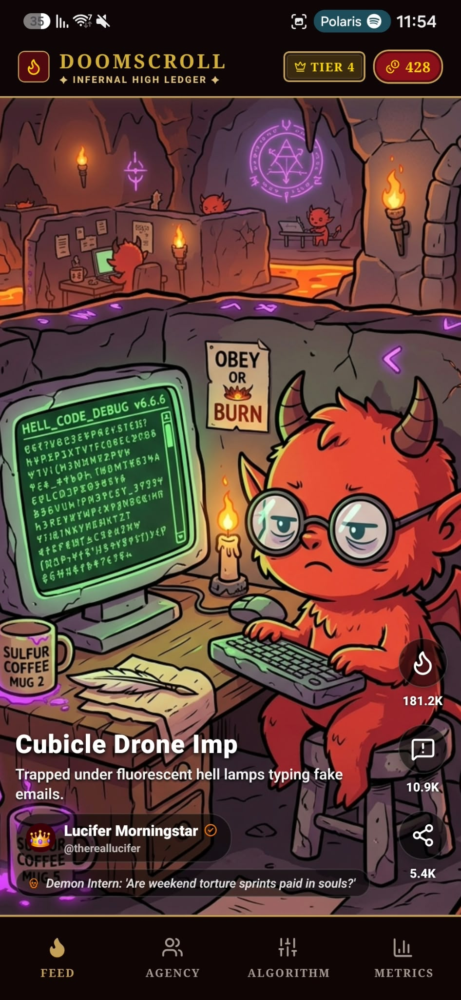

A satirical demonic social network mobile game built with React Native and Expo SDK 57. Weaponizing infinite scroll addiction psychology, dopamine reward loops, 10 upgradeable dark patterns, and calibrated pity jackpot cadences.

Social media applications exploit variable reward schedules and micro-dopamine triggers to hook attention. The design goal was reverse-engineering these exact psychological hooks into an engaging, satirical incremental mobile game.
A dual-loop mobile architecture: an active high-frequency feed powered by 60 FPS FlashList rendering, paired with an incremental management economy where players upgrade demonic edicts, telemetry, and dark pattern switches.
Deterministic balance balancing soul drop odds, Viral Hype multiplier streaks, guaranteed pity jackpots every 65-75 scrolls, and an offline Void Attrition engine that protects long-term engagement.
Swipe through the 7 core demonic systems engineered for satirical mobile engagement:
Tuning player dopamine cycles: balancing soul consumption, roll odds, dynamic streaks, and jackpot thresholds:
Mathematically calibrated probability curve with soft pity scaling, engineered to trigger high-impact 1,000-Soul Legendary Royalty drops every 65 to 75 scrolls.
Dynamic threshold algorithm that triggers Viral Hype streaks upon consecutive high-tier drops, guaranteeing a Legendary Royalty drop at 10+ streaks alongside dry-streak pity recovery.
Each scroll costs 1 Soul, while repetitive visual archetypes suffer Content Decay and offline absence triggers passive soul decay, maintaining tension between binging and resource survival.
Engineered for high-frequency state updates and fluid 60 FPS mobile rendering: